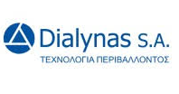
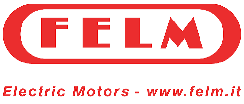
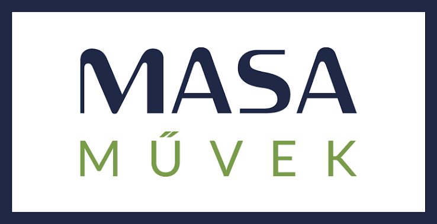
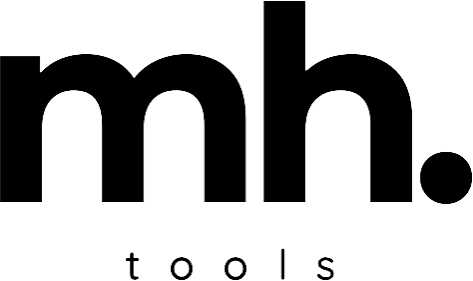
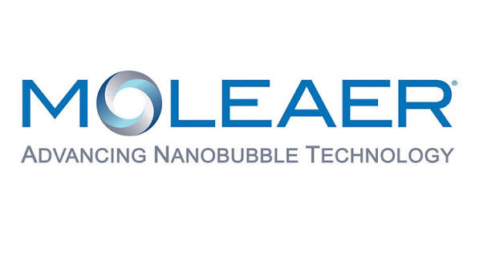
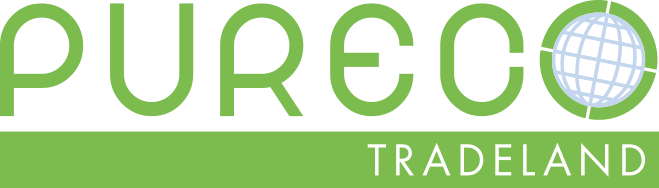
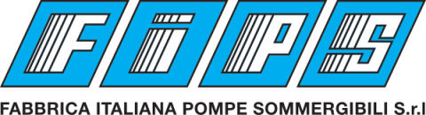

Hydro-Tech for Environmental Solutions is an Egyptian engineering company specialized in environmental, water and wastewater solutions. Through international partnerships, advanced technologies and engineering excellence, we design and deliver reliable, efficient and sustainable infrastructure projects that create long-term value for our clients and communities.
Environmental sustainability has become one of the defining challenges of our time. Rapid urban development, industrial expansion, increasing pressure on natural resources, and evolving environmental regulations demand more than conventional engineering—they require intelligent, integrated, and future-focused solutions.
Hydro-Tech for Environmental Solutions (HT-Enviro) was established to meet this challenge by combining engineering expertise with internationally recognized technologies and strategic partnerships. Our mission is to transform complex environmental requirements into practical, reliable, and sustainable engineering solutions that deliver measurable long-term value for our clients and the communities they serve.
Rather than supplying standard products, we engineer complete environmental systems tailored to the technical, operational, and environmental objectives of every project. From engineering consultancy and technology selection to detailed design, project implementation, commissioning, operation, and long-term technical support, every solution is developed to achieve maximum efficiency, operational reliability, and sustainable performance.
Our business is built on collaboration. Through strong partnerships with internationally recognized technology providers, we integrate proven global innovations with local engineering knowledge, enabling us to deliver solutions that meet international standards while addressing regional requirements and operating conditions.
At HT-Enviro, we believe successful projects are built on engineering excellence, innovation, integrity, and long-term partnerships. Every project is an opportunity to strengthen environmental infrastructure, improve resource efficiency, and contribute to a cleaner, safer, and more sustainable future.
At HT-Enviro, our purpose is to transform environmental challenges into sustainable engineering solutions through technical excellence, innovation, and strategic international partnerships. Every project we undertake is driven by our commitment to creating long-term value for our clients, communities, and the environment.
To become one of the leading environmental engineering and technology integration companies across the Middle East and Africa, recognized for engineering excellence, innovation, trusted international partnerships, and our ability to transform complex environmental challenges into sustainable, future-ready solutions. We aspire to create lasting value for our clients while contributing to resilient infrastructure, responsible resource management, and a healthier environment for future generations.
To deliver integrated environmental engineering and technology solutions by combining multidisciplinary expertise, internationally proven technologies, and strategic global partnerships. We work closely with our clients to understand their operational objectives and develop reliable, efficient, and sustainable solutions that maximize technical performance, environmental responsibility, and long-term value throughout every stage of the project lifecycle.
Every environmental challenge is unique. We believe successful solutions cannot be built around standard products alone. Instead, they must be engineered around each client's objectives, operational requirements, and long-term sustainability goals. These principles define how we approach every project, every partnership, and every solution we deliver.
By combining multidisciplinary engineering expertise, internationally proven technologies, and strategic global partnerships, we develop integrated environmental solutions that create measurable technical, operational, and environmental value throughout their entire lifecycle.
Delivering reliable, high-performance engineering solutions through technical expertise, precision, and international standards.
Applying advanced technologies and innovative engineering to improve efficiency, sustainability, and long-term performance.
Engineering every solution around our clients' operational priorities, technical requirements, and long-term objectives.
Combining internationally proven technologies with local engineering expertise to deliver world-class environmental solutions.
Designing durable engineering systems that deliver reliable performance and sustainable value throughout their lifecycle.
HT-Enviro delivers integrated engineering and environmental solutions across a broad spectrum of industries. By combining international technologies with multidisciplinary engineering expertise, we help public and private sector organizations develop reliable, efficient, and sustainable infrastructure tailored to their operational needs.
Designing advanced drinking water and process water solutions that maximize efficiency, reliability, and sustainability.
Engineering municipal and industrial wastewater systems that support environmental compliance and long-term operational performance.
Providing customized engineering solutions for industrial facilities, utilities, and manufacturing operations.
Supporting cities and public utilities with resilient environmental infrastructure and sustainable development projects.
Integrating innovative technologies that improve resource efficiency and reduce environmental impact.
Delivering engineering solutions for large-scale infrastructure, utilities, transportation, and national development initiatives.
HT-Enviro collaborates with internationally recognized technology providers and engineering companies to deliver advanced environmental solutions. Through strategic international partnerships, we combine global innovation with local engineering expertise to provide reliable, sustainable, and future-ready technologies for water, wastewater, industrial, and infrastructure projects.

Decentralized wastewater treatment and environmental engineering technologies.

Premium electric motors for industrial and pumping applications.

Mechanical engineering equipment for water, wastewater, and environmental infrastructure.

Engineering tools and industrial maintenance solutions.
High-performance pumping systems and integrated water infrastructure solutions.

World-leading nanobubble technology for sustainable water treatment and process optimization.

Innovative technologies for sustainable water and wastewater treatment.

High-quality piping systems and engineered plastic solutions for industrial and water infrastructure.
Whether you represent a government authority, municipality, developer or industrial organization, HT-Enviro is ready to support your environmental and infrastructure projects with innovative engineering solutions.